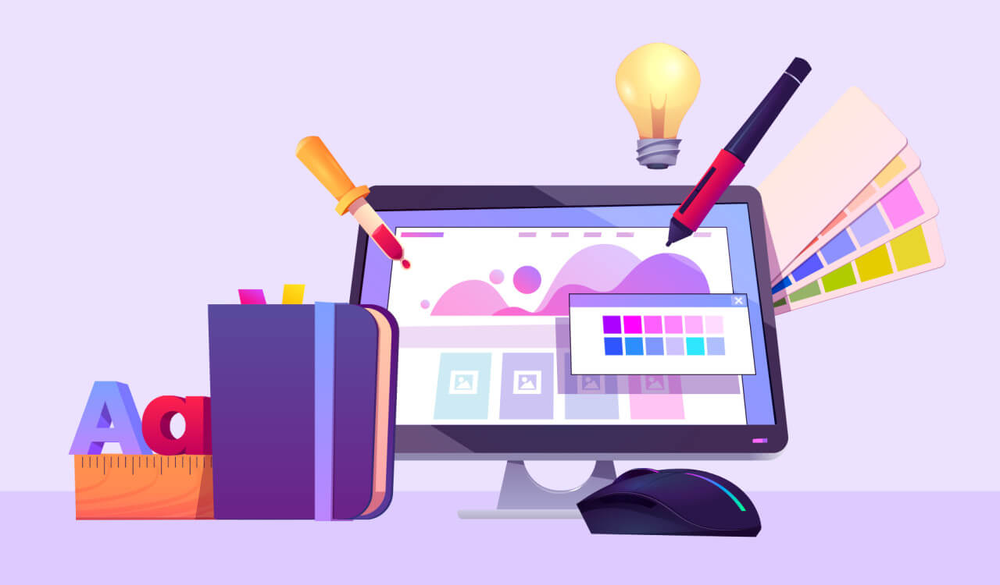
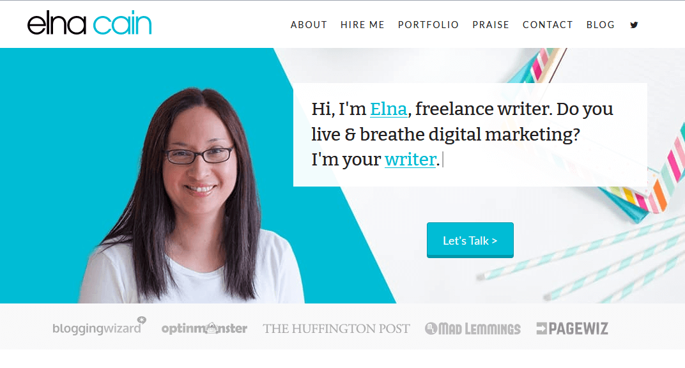
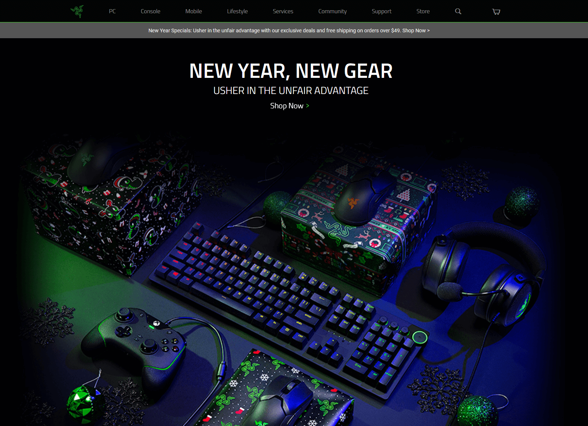
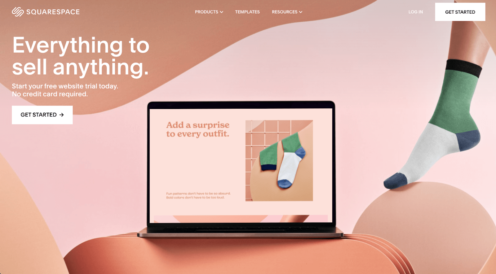
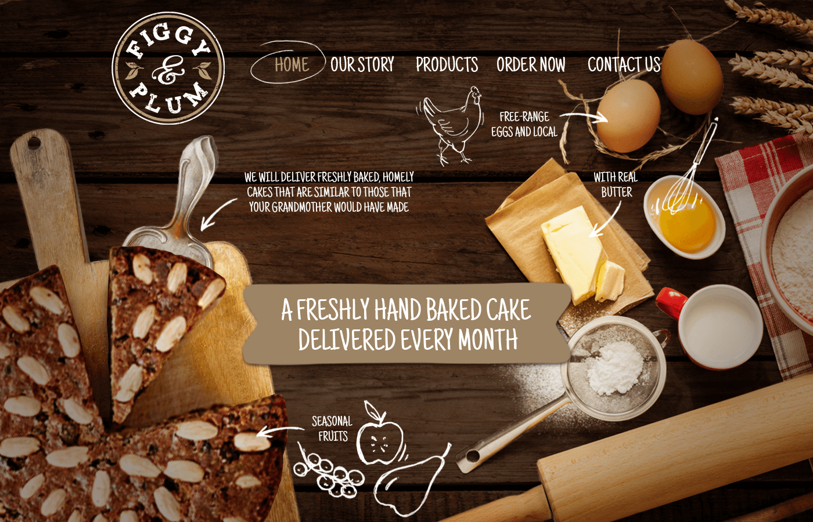

Ya sea que esté creando un sitio web para una pequeña empresa, producto, servicio o su propia cartera, es esencial familiarizarse con los conceptos básicos de diseño web. Hay varios elementos clave a considerar, como el propósito de su sitio web, la identificación de la audiencia, el diseño, la usabilidad y la marca.
Comprender los conceptos básicos del diseño web puede ayudar a impulsar la reputación de su marca o negocio al generar credibilidad y generar confianza con sus visitantes. Aunque hay muchos aspectos del diseño web a considerar, cubriremos algunos de los conceptos básicos de diseño web que necesitará para comenzar con su sitio web.
Primeros pasos en su sitio web
Definir el propósito
La primera etapa de la creación de su sitio web es determinar el propósito de su sitio web. ¿Está creando una cartera digital, mostrando los servicios de su empresa a clientes potenciales o vendiendo productos en línea? ¿Cuál es el objetivo de su sitio web? La claridad es clave: si los usuarios no entienden tu sitio web, se irán. El propósito de su sitio web debe ser claro y directo.
El sitio web de la escritora Elna Cain es un gran ejemplo. En la mitad superior de la página de destino, el espectador se entera rápidamente de que Elna es una escritora independiente que se especializa en marketing digital y lo respalda con su experiencia, testimonios y resultados. Un usuario puede decir de inmediato que ofrece redacción publicitaria, redacción fantasma y redacción de blogs.
Una vez que establezca la intención de su sitio web, el siguiente paso es determinar su público objetivo.
Identifica tu público objetivo
¿Para quién es tu sitio web? Diseñar para los usuarios previstos es uno de los conceptos básicos por excelencia del diseño web. Si usted es un diseñador de productos que busca un nuevo trabajo, su público objetivo para su sitio de cartera serían gerentes de contratación y reclutadores. Esto ayudará a dar forma a lo que es una prioridad en su sitio web y cómo canalizar a los usuarios al lugar correcto.
Para identificar a su público objetivo, realice una investigación de los usuarios sobre la demografía, la ubicación y los objetivos del usuario. Considere mirar los sitios web de la competencia y sus páginas de redes sociales para analizar quién es su público objetivo y compararlos con las necesidades de su sitio web. También intente investigar a su público objetivo y adapte el contenido y la copia de su sitio web a sus necesidades. Esto aumenta sus posibilidades de recordar su sitio.
Razer crea periféricos de juegos para computadoras y consolas de videojuegos. La marca, el esquema de colores y el uso de imágenes oscuras de Razer atraen a los jugadores, que tienden a jugar en entornos más oscuros. Mediante el uso de imágenes de sus productos de juego, así como el tono de su lenguaje, anunciando la "ventaja injusta" de sus productos, la empresa ha definido de forma audible su público objetivo.
Razer realiza esfuerzos concertados para llegar a su audiencia a través de su portal comunitario. En su nuevo sitio web, considere incluir una sección comunitaria o, al menos, una página de contacto.
Hacer un plan
Ahora que conoce el propósito y la audiencia de su sitio web, es hora de hacer un plan. ¿Está creando su sitio web mediante la contratación de un desarrollador o tratando de descifrar HTML, CSS y Javascript? Si no lo eres, no te desanimes. Hay servicios como Squarespace, Wix y WordPress que ofrecen formas sin código de crear un sitio web compatible con plataformas móviles y de escritorio.
Una vez que se haya decidido, calcule su presupuesto para alojamiento web y dominio. Y decide cuándo lanzarás tu sitio. Si desea obtener más información sobre cómo crear un sitio web, elegir un dominio y alojamiento web, lo tenemos cubierto.
Busca inspiración
¡Genera ideas para tu sitio web buscando inspiración en otros sitios! Si se siente atascado, confundido acerca de por dónde empezar o no está seguro de cómo quiere que se vea su sitio web, hay una gran cantidad de sitios web para satisfacer su paleta.
Puede comenzar mirando Awwwards, la fuente de inspiración para muchos tipos diferentes de diseñadores. Presentan docenas de sitios web deslumbrantes y galardonados. También tenemos muchos diseños web inspiradores y maquetas en exhibición en nuestra página de descubrimiento. Y, por supuesto, echar un vistazo a los negocios y productos de la competencia o las carteras de otros artistas y diseñadores también puede generar ideas para su sitio web.
La página de destino de Figgy & Plum, que se muestra arriba, es un ejemplo deliciosamente tentador de inspiración para el diseño web. Me dan ganas de comer en esta panadería. Su sitio web debe inspirar a sus usuarios a tomar medidas, ya sea comprar un producto, generar clientes potenciales o contactarlo para una entrevista de trabajo.
Diseño y apariencia
Cuadrículas y diseños
Uno de los conceptos básicos del diseño web consiste en diseñar con una cuadrícula. El sistema de cuadrícula es un diseño basado en medidas y pautas. La cuadrícula se compone de columnas (espacios designados para la colocación de contenido) y canales (los espacios vacíos entre las columnas). Dividen la página en secciones para organizar el contenido y la jerarquía.